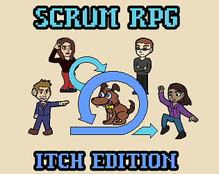

Date: September 2021 - November 2022 as Thesis for the Software Engineering Degree.
Team: Game developed by Isabel Arrans and Matthew Bwye.
Itch.io page: ScrumRPG
Gameplay explanation video: in spanish
Github: ScrumRPG Repository.If not visible, contact me at isabelarrans@gmail.com
Engine: Unity
Programming Languages: C#
External plugins or libraries: ORK Framework V2 by GamingIsLove
Recognitions and awards: calification: Distinction, Sistedes Award to Best Software Engineering Degree Thesis work (National award)
Platforms: Windows, Android.
Genres: RPG (Turn-Based).
Target: Software Engineering University Students.
PEGI: 3.
Summary: ScrumRPG is a gamified version of the Scrum Management Framework designed to teach its steps and theory as if they were phases in a battle against evil tasks.
Main mechanics:
Unique Selling Points:
Main competitors:
Scrum RPG
Project data
Date: September 2021 - November 2022 as Thesis for the Software Engineering Degree.
Team: Game developed by Isabel Arrans and Matthew Bwye.
Itch.io page: ScrumRPG
Gameplay explanation video: in spanish
Github: ScrumRPG Repository.If not visible, contact me at isabelarrans@gmail.com
Engine: Unity
Programming Languages: C#
External plugins or libraries: ORK Framework V2 by GamingIsLove
Recognitions and awards: calification: Distinction, Sistedes Award to Best Software Engineering Degree Thesis work (National award)
Resume
Platforms: Windows, Android.
Genres: RPG (Turn-Based).
Target: Software Engineering University Students.
PEGI: 3.
Summary: ScrumRPG is a gamified version of the Scrum Management Framework designed to teach its steps and theory as if they were phases in a battle against evil tasks.
Main mechanics:
- Task management/Sprint planning: Decide how many enemies (tasks) and how much strength (story points) our team of developers will battle against. Also, choose the sprint duration and your team roles based on your tasks choices.
- Turn planification/Daily meeting: Decide on actions to battle (or finish) tasks. The strength of attacks depends on the developer's motivation and mood that day. Each developer can only attack one task within their role.
- Battle stats/Sprint Review: Depending on how many of the originally planned story points were completed, your characters' motivation will increase or decrease.
- Side Quest/Sprint Retrospective: Choose secondary missions to gain extra motivation at the end of the next battle.
Unique Selling Points:
- Gamification: Learn real Scrum steps in a new entertaining way.
- Singleplayer simulation: Scrum is a methodology typically used in groups. With this game, you can practice on your own without relying on other teammates.
Main competitors:
- ScrumTale